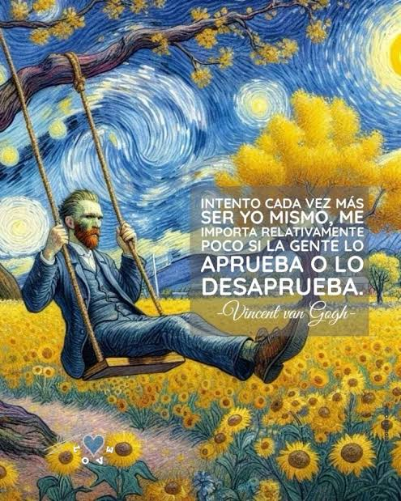
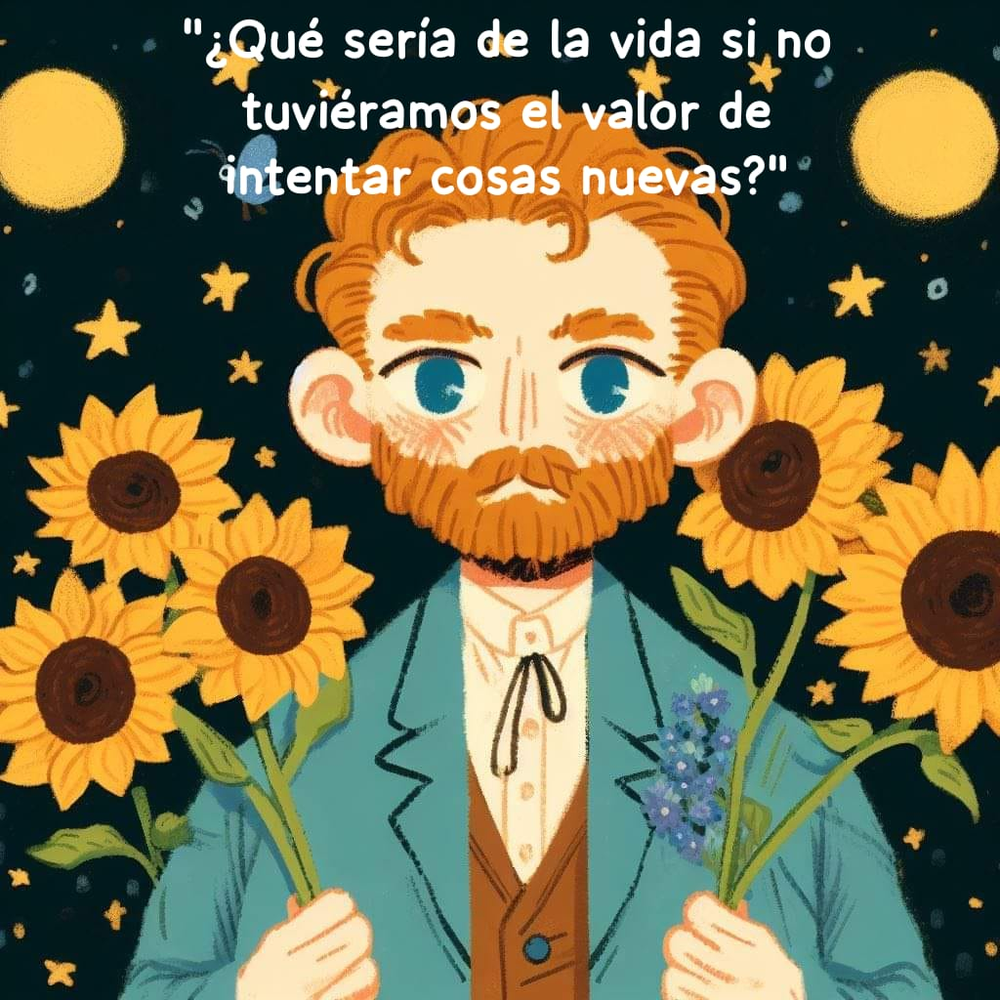
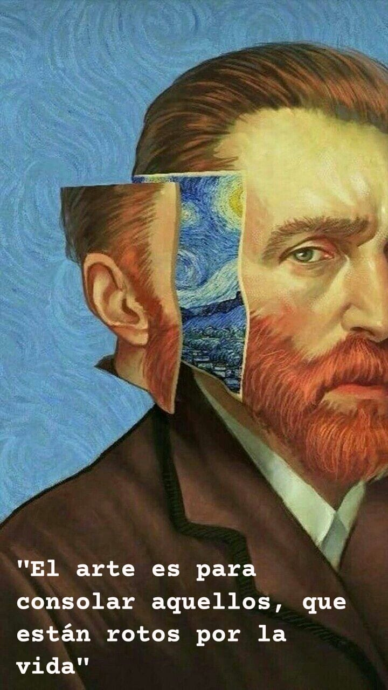
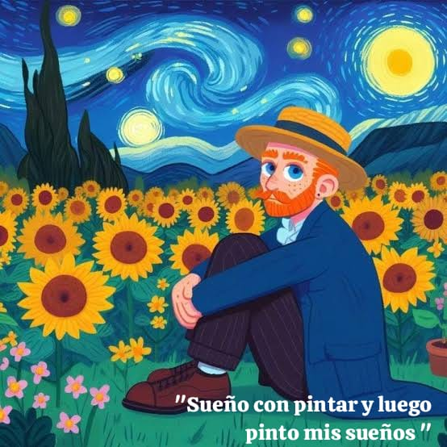
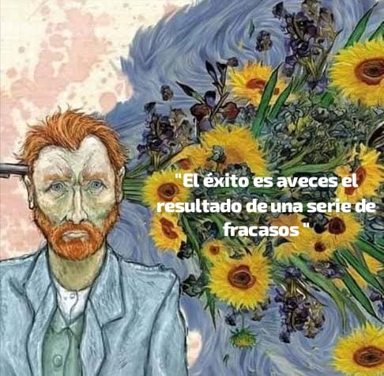

✨Vincent Willem van Gogh no era el típico artista. Si hubiera vivido hoy, seguro estaría en TikTok pintando girasoles con la intensidad de un rockstar 🤘🌻🤩. Su vida fue un torbellino de pinceladas y emociones. Aunque nació en una pequeña aldea holandesa, su espíritu inquieto lo llevó a probar de todo: predicador, marchante de arte, maestro... y, finalmente, pintor.🎨🖌️ Con más de 900 pinturas y 1,100 dibujos, Vincent plasmó el mundo como lo sentía: un lugar vibrante, lleno de colores que nadie más veía como él 🫀. Pero la genialidad no vino sin un costo. Entre crisis de salud mental y una famosa oreja que terminó mal parada, su vida fue un drama artístico que ni Netflix podría igualar 🤭👂🎬. Aunque en su época vendió solo una pintura (¡una!) 🥹💔, hoy es una superestrella del arte ⭐. "La noche estrellada" y sus icónicos girasoles 🌻✨ decoran desde museos hasta tazas de café. Y aunque su vida terminó a los 37 años, su legado brilla como un cielo lleno de estrellas: intenso, eterno y profundamente humano 🫰💙💛🩵✨.
La vida de van Gogh es un lienzo lleno de luces y sombras, intensa vibrante y llena de giros inesperados como sus obras. Nació en 1853 en los Países Bajos, en una familia numerosa donde la religión era pan de cada día. Desde pequeño, Vincent mostró ser diferente, sensible y con un temperamento intenso. Su hermano menor, Theo, sería su mayor apoyo emocional y financiero, una conexión fraternal que trascendió las dificultades y dejó como testimonio cientos de cartas llenas de reflexiones y anhelos.
¡Ah!, la famosa historia de su oreja es uno de los episodios más impactantes de su vida. En 1888, durantes su estadía en Arlés, Francia, Vincent convivió con otro pintor, Pul Gauguin. Su relación era tan apasionada como conflictiva, lo que prometía ser una colaboración artística terminó siendo más caótica que un reality show. Con constantes discusiones sobre el arte y la vida. Una noche, después de una pelea especialmente intensa, Vincent, en medio de una crisis emocional, tomó una navaja y... ¡adiós oreja!. Bueno solo una parte de su oreja izquierda. Aún no está claro si fue un acto impulsivo tras la discusión o una expresión de su batalla interna con la salud mental. Existen algunas teorias de que envió el pedazo de oreja a una mujer de un burdel cercano o a el mismo Gauguin, de cualquier modo, un gesto tan descorcentante como trágico y surrealista como sus pinturas.
Lo impresionante es que a pesar de sus crisis y problemas mentales, Vincent veía el mundo con un filtro mágico, de una forma que nadie más podía. Sus obras, como La noche estrellada , Los girasoles y El dormitorio en Arlés, son explosiones de color y emosión. Se inspiraba en la naturaleza, los paisajes rurales, la vida cotidiana y las personas que lo rodeaban. Pero no pintaba solo lo que veía: pintaba lo que sentía. Su estilo postimpresionista rompió con las normas del realismo, llevando el arte a nuevas alturas de expresividad. Sus girasoles no eran simples flores; eran explosiones de luz. Sus noches estrelladas no solo brillaban; parecían danzar en el cielo. Su arte eran ventanas directas a su alma.
La vida Vincent terminó demasioado pronto después de años de lucha contra su salud mental. En Francia 1890 con solo 37 años de edad murió tras recibir un disparo. Aunque se cree que se suicidó, algunos historiadores plantean la teoría de que pudo haber sido un accidente provocado por unos adolescentes traviesos. Como en toda buena película de misterio, nunca sabremos la verdad completa. Lo que no cambia es la profunda tristeza que marcó sus últimos días, a pesar de haber creado algunas de sus obras más brillantes en ese periodo, dejó el mundo sin saber lo influyente que sería su arte.
